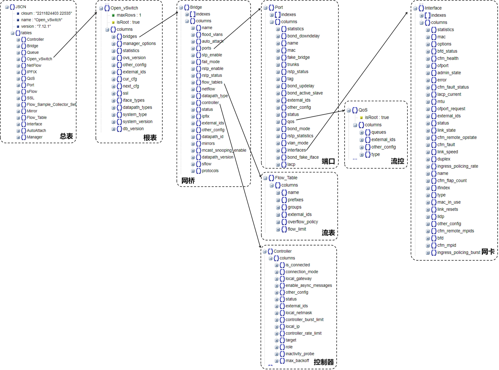

- 00 开篇词 想成为技术牛人？先搞定网络协议！.md
- 01 为什么要学习网络协议？.md
- 02 网络分层的真实含义是什么？.md
- 03 ifconfig：最熟悉又陌生的命令行.md
- 04 DHCP与PXE：IP是怎么来的，又是怎么没的？.md
- 05 从物理层到MAC层：如何在宿舍里自己组网玩联机游戏？.md
- 06 交换机与VLAN：办公室太复杂，我要回学校.md
- 07 ICMP与ping：投石问路的侦察兵.md
- 08 世界这么大，我想出网关：欧洲十国游与玄奘西行.md
- 09 路由协议：西出网关无故人，敢问路在何方.md
- 10 UDP协议：因性善而简单，难免碰到“城会玩”.md
- 11 TCP协议（上）：因性恶而复杂，先恶后善反轻松.md
- 12 TCP协议（下）：西行必定多妖孽，恒心智慧消磨难.md
- 13 套接字Socket：Talk is cheap, show me the code.md
- 14 HTTP协议：看个新闻原来这么麻烦.md
- 15 HTTPS协议：点外卖的过程原来这么复杂.md
- 16 流媒体协议：如何在直播里看到美女帅哥？.md
- 17 P2P协议：我下小电影，99%急死你.md
- 18 DNS协议：网络世界的地址簿.md
- 19 HttpDNS：网络世界的地址簿也会指错路.md
- 20 CDN：你去小卖部取过快递么？.md
- 21 数据中心：我是开发商，自己拿地盖别墅.md
- 22 VPN：朝中有人好做官.md
- 23 移动网络：去巴塞罗那，手机也上不了脸书.md
- 24 云中网络：自己拿地成本高，购买公寓更灵活.md
- 25 软件定义网络：共享基础设施的小区物业管理办法.md
- 26 云中的网络安全：虽然不是土豪，也需要基本安全和保障.md
- 27 云中的网络QoS：邻居疯狂下电影，我该怎么办？.md
- 28 云中网络的隔离GRE、VXLAN：虽然住一个小区，也要保护隐私.md
- 29 容器网络：来去自由的日子，不买公寓去合租.md
- 30 容器网络之Flannel：每人一亩三分地.md
- 31 容器网络之Calico：为高效说出善意的谎言.md
- 32 RPC协议综述：远在天边，近在眼前.md
- 33 基于XML的SOAP协议：不要说NBA，请说美国职业篮球联赛.md
- 34 基于JSON的RESTful接口协议：我不关心过程，请给我结果.md
- 35 二进制类RPC协议：还是叫NBA吧，总说全称多费劲.md
- 36 跨语言类RPC协议：交流之前，双方先来个专业术语表.md
- 37 知识串：用双十一的故事串起碎片的网络协议（上）.md
- 38 知识串：用双十一的故事串起碎片的网络协议（中）.md
- 39 知识串：用双十一的故事串起碎片的网络协议（下）.md
- 40 搭建一个网络实验环境：授人以鱼不如授人以渔.md
- 加餐1 创作故事：我是如何创作“趣谈网络协议”专栏的？.md
- 协议专栏特别福利 答疑解惑1期.md
- 协议专栏特别福利 答疑解惑2期.md
- 协议专栏特别福利 答疑解惑3期.md
- 协议专栏特别福利 答疑解惑4期.md
- 协议专栏特别福利 答疑解惑5期.md
- 结束语 放弃完美主义，执行力就是限时限量认真完成.md
40 搭建一个网络实验环境：授人以鱼不如授人以渔
因为这门课是基础课程，而且配合音频的形式发布，所以我多以理论为主来进行讲解。在专栏更新的过程中，不断有同学让我推荐一些网络方面的书籍，还有同学说能不能配合一些实验来说明理论。
的确，网络是一门实验性很强的学科，就像我在开篇词里面说的一样：一看觉得懂，一问就打鼓，一用就糊涂。 在写专栏的过程中，我自己也深深体会到了。这个时候，我常常会拿一个现实的环境，上手操作一下，抓个包看看，这样心里就会有定论。
《TCP/IP详解》实验环境搭建
对于网络方面的书籍，我当然首推Rechard Stevens的《TCP/IP illustrated》（《TCP/IP详解》）。这本书把理论讲得深入浅出，还配有大量的上手实践和抓包，看到这些抓包，原来不理解的很多理论，一下子就能懂了。
这本书里有个拓扑图，书上的很多实验都是基于这个图的，但是这个拓扑图还是挺复杂的。我这里先不说，一会儿详细讲。
Rechard Stevens，因为工作中有这么一个环境，很方便做实验，最终才写出了这样一本书，而我们一般人学习网络，没有这个环境应该怎么办呢？
时代不同了，咱们现在有更加强大的工具了。例如，这里这么多的机器，我们可以用Docker来实现，多个网络可以用Open vSwitch来实现。你甚至不需要一台物理机，只要一台1核2G的虚拟机，就能将这个环境搭建起来。
搭建这个环境的时候，需要一些脚本。我把脚本都放在了Github里面，你可以自己取用。
1.创建一个Ubuntu虚拟机
在你的笔记本电脑上，用VirtualBox创建就行。1核2G，随便一台电脑都能搭建起来。
首先，我们先下载一个Ubuntu的镜像。我是从Ubuntu官方网站下载的。

然后，在VirtualBox里面安装Ubuntu。安装过程网上一大堆教程，你可以自己去看，我这里就不详细说了。
这里我需要说明的是网络的配置。
对于这个虚拟机，我们创建两个网卡，一个是Host-only，只有你的笔记本电脑上能够登录进去。这个网卡上的IP地址也只有在你的笔记本电脑上管用。这个网卡的配置比较稳定，用于在SSH上做操作。这样你的笔记本电脑就可以搬来搬去，在公司里安装一半，回家接着安装另一半都没问题。

这里有一个虚拟的网桥，这个网络可以在管理>主机网络管理里面进行配置。

在这里可以虚拟网桥的的IP地址，同时启用一个DHCP服务器，为新创建的虚拟机配置IP地址。
另一个网卡配置为NAT网络，用于访问互联网。配置了NAT网络之后，只要你的笔记本电脑能上网，虚拟机就能上网。由于咱们在Ubuntu里面要安装一些东西，因而需要联网。
你可能会问了，这个配置复杂吗？一点儿都不复杂。咱们讲[虚拟机网络]的时候，讲过这个。

安装完了Ubuntu之后，需要对Ubuntu里面的网卡进行配置。对于Ubuntu来讲，网卡的配置在/etc/network/interfaces这个文件里面。在我的环境里，NAT的网卡名称为enp0s3，Host-only的网卡的名称为enp0s8，都可以配置为自动配置。
auto lo
iface lo inet loopback
auto enp0s3
iface enp0s3 inet dhcp
auto enp0s8
iface enp0s8 inet dhcp
这样，重启之后，IP就配置好了。
2.安装Docker和Open vSwitch
接下来，在Ubuntu里面，以root用户，安装Docker和Open vSwitch。
你可以按照Docker的官方安装文档来做。我这里也贴一下我的安装过程。
apt-get remove docker docker-engine docker.io
apt-get -y update
apt-get -y install apt-transport-https ca-certificates curl software-properties-common
curl -fsSL https://download.docker.com/linux/ubuntu/gpg > gpg
apt-key add gpg
apt-key fingerprint 0EBFCD88
add-apt-repository "deb [arch=amd64] https://download.docker.com/linux/ubuntu $(lsb_release -cs) stable"
apt-get -y update
apt-cache madison docker-ce
apt-get -y install docker-ce=18.06.0~ce~3-0~ubuntu
之后，还需要安装Open vSwitch和Bridge。
apt-get -y install openvswitch-common openvswitch-dbg openvswitch-switch python-openvswitch openvswitch-ipsec openvswitch-pki openvswitch-vtep
apt-get -y install bridge-utils
apt-get -y install arping
3.准备一个Docker的镜像
每个节点都是一个Docker，对应要有一个Docker镜像。这个镜像我已经打好了，你可以直接使用。
docker pull hub.c.163.com/liuchao110119163/ubuntu:tcpip
当然你也可以自己打这个镜像。Dockerfile就像这样：
FROM hub.c.163.com/public/ubuntu:14.04
RUN apt-get -y update && apt-get install -y iproute2 iputils-arping net-tools tcpdump curl telnet iputils-tracepath traceroute
RUN mv /usr/sbin/tcpdump /usr/bin/tcpdump
ENTRYPOINT /usr/sbin/sshd -D
4.启动整个环境
启动这个环境还是比较复杂的，我写成了一个脚本。在Git仓库里面，有一个文件 setupenv.sh ，可以执行这个脚本，里面有两个参数，一个参数是NAT网卡的名字，一个是镜像的名称。
git clone https://github.com/popsuper1982/tcpipillustrated.git
cd tcpipillustrated
docker pull hub.c.163.com/liuchao110119163/ubuntu:tcpip
chmod +x setupenv.sh
./setupenv.sh enp0s3 hub.c.163.com/liuchao110119163/ubuntu:tcpip
这样，整个环境就搭建起来了，所有的容器之间都可以ping通，而且都可以上网。
不过，我写的这个脚本对一些人来说可能会有点儿复杂，我这里也解释一下。
首先每一个节点，都启动一个容器。使用–privileged=true方式，网络先不配置–net none。有两个二层网络，使用ovs-vsctl的add-br命令，创建两个网桥。
pipework是一个很好的命令行工具，可以将容器连接到两个二层网络上。
但是我们上面那个图里有两个比较特殊的网络，一个是从slip到bsdi的P2P网络，需要创建一个peer的两个网卡，然后两个Docker的网络namespace里面各塞进去一个。
有关操作Docker的网络namespace的方式，咱们在[容器网络]那一节讲过ip netns命令。
这里需要注意的是，P2P网络和下面的二层网络不是同一个网络。P2P网络的CIDR是140.252.13.64/27，而下面的二层网络的CIDR是140.252.13.32/27。如果按照/24，看起来是一个网络，但是/27就不是了。至于[CIDR的计算方法]，你可以回去复习一下。
另外需要配置从sun到netb的点对点网络，方法还是通过peer网卡和ip netns的方式。
这里有个特殊的地方，对于netb来讲，不是一个普通的路由器，因为netb两边是同一个二层网络，所以需要配置arp proxy。
为了所有的节点之间互通，要配置一下路由策略，这里需要通过ip route命令。
-
对于slip来讲，bsdi左面13.66这个网口是网关。
-
对于bsdi和svr4来讲，如果去外网，sun下面的网口13.33是网关。
-
对于sun来讲，上面的网口1.29属于上面的二层网络了，它如果去外网，gateway下面的网口1.4就是外网网关。
-
对于aix，solaris，gemini来讲，如果去外网，网关也是gateway下面的网口1.4。如果去下面的二层网口，网关是sun上面的网口1.29。
配置完了这些，图中的所有的节点都能相互访问了，最后还要解决如何访问外网的问题。
我们还是需要创建一个peer网卡对。一个放在gateway里面，一个放在gateway外面。外面的网卡去外网的网关。
在虚拟机上面，还需要配置一个iptables的地址伪装规则MASQUERADE，其实就是一个SNAT。因为容器里面要访问外网，因为外网是不认的，所以源地址不能用容器的地址，需要SNAT成为虚拟机的地址出去，回来的时候再NAT回来。
配置这个环境还是挺复杂的，要用到咱们学到的很多知识。如果没有学习前面那些知识，直接就做这个实验，你肯定会很晕。但是只学理论也不行，要把理论都学过一遍，再做一遍实验，这才是一个不断迭代、更新知识库的过程。
有了这个环境，《TCP/IP详解》里面的所有实验都能做了，而且我打的这个Docker镜像里面，tcpdump等网络工具都安装了，你可以“为所欲为”了。
Open vSwitch的实验
做了TCP/IP详解的实验之后，网络程序设计这部分，你就有了坚实的基础。但是涉及到数据中心内部的一些网络技术，什么VLAN、VXLAN、STP等偏运维方向的，学习还是会比较困难。好在我们有Open vSwitch，也可以做大量的实验。
Open vSwitch门槛比较高，里面的概念也非常多，可谓千头万绪。不过，通过我这么多年研究的经验，可以告诉你，这里面有一个很好的线索，那就是Open vSwitch会将自己对于网络的配置保存在一个本地库里面。这个库的表结构之间的关系就像这样：
这个库其实是一个JSON，如果把这个JSON打印出来，能够看到更加详细的特性。按照这些特性一一实验，可以逐渐把Open vSwitch各个特性都掌握。

这里面最重要的概念就是网桥。一个网桥会有流表控制网络包的处理过程，会有控制器下发流表，一个网桥上会有多个端口，可以对端口进行流控，一个端口可以设置VLAN，一个端口可以包含多个网卡，可以做绑定，网卡可以设置成为GRE和VXLAN。
我写过一个Open vSwitch的实验教程，也放在了Github里面。这里面有这么几个比较重要的实验，你可以看一看。
-
实验一：查看Open vSwitch的架构。我们在讲Open vSwitch的时候，提过Open vSwitch的架构，在这个实验中，我们可以查看Open vSwitch的各个模块以及启动的参数。
-
实验五：配置使用OpenFlow Controller，体验一把作为小区物业在监控室里面管控整个小区道路的样子。
-
实验八：测试Port的VLAN功能。看一下VLAN隔离究竟是什么样的。
-
实验十：QoS功能。体验一把如果使用HTB进行网卡限流。
-
实验十一：GRE和VXLAN隧道功能，看虚拟网络如何进行租户隔离。
-
实验十五：对Flow Table的操作，体验流表对网络包随心所欲的处理。
好了，关于整个环境的搭建我就讲到这里了。
其实到这里，对于网络世界的探索才刚刚开始，只有经过你自己动手和思考产生的内容，才是真正属于你的知识！打开你的电脑，上手去实验吧！
欢迎你留言和我讨论。趣谈网络协议，我们下期见！
© 2019 - 2023 Liangliang Lee. Powered by Vert.x and hexo-theme-book.